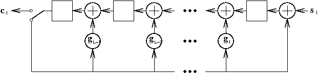

11.1. Cyclic Redundancy Check Codes#
Cyclic Redundancy Check (CRC) codes are a class of systematic, linear, error-detecting cyclic codes that are commonly used in practice for detecting transmission errors.
11.1.1. Encoding#
CRC codewords can be most conveniently described as polynomials (indeterminate \(D\)) with coefficients (bits) in GF(2) (Galois Field of 2 elements, i.e., \(\{0,1\}\) with modulo-2 arithmetic). Each codeword is made up of \(K\) information bits \(s_{0}, s_{1}, \ldots, s_{K-1}\) and \(L\) parity check (CRC) bits \(c_{0}, c_{1}, \ldots, c_{L-1}\).
Consider the information polynomial \(s(D)\) and parity-check polynomial \(c(D)\):
\[\begin{align*} s(D) & = s_{K-1} D^{K-1} + s_{K-2} D^{K-2} + \cdots + s_1 D + s_0 \\ c(D) & = c_{L-1} D^{L-1} + c_{L-2} D^{L-2} + \cdots + c_1 D + c_0. \end{align*}\]The parity-check polynomial \(c(D)\) is obtained as the remainder of \(s(D) D^{L}\) divided by an \(L\)-degree generator polynomial
\[\begin{equation*} g(D) = D^{L} + g_{L-1} D^{L-1} + g_{L-2} D^{L-2} + \cdots + g_1 D + 1. \end{equation*}\]In other words, we have
(11.1)#\[\begin{equation} s(D) D^L = g(D) q(D) + c(D) \end{equation}\]where \(q(D)\) is the \((K\!-\!1)\)-degree quotient polynomial.
Construct the codeword polynomial
(11.2)#\[\begin{split}\begin{align} x(D) &= s(D) D^L + c(D) \\ & = s_{K-1} D^{L+K-1} + s_{K-2} D^{L+K-2} + \cdots + s_1 D^{L+1} + s_0 D^L + c_{L-1} D^{L-1} + c_{L-2} D^{L-2} + \cdots + c_1 D + c_0. \end{align}\end{split}\]The \(L+K\) bits in the codeword are modulated and then transmitted.
Subtracting (adding) \(c(D)\) on both sides of (11.1) and then comparing with (11.2), we conclude that \(x(D) = g(D) q(D)\). That is, the codeword polynomial \(x(D)\) is divisible by the generator polynomial \(g(D)\).
11.1.2. Decoding#
Suppose that during the TX process, some of the \(L+K\) TX bits are erroneously demodulated. The errors can be represented by an \((L\!+\!K\!-\!1)\)-degree polynomial
\[\begin{equation*} e(D) = e_{L+K-1} D^{L+K-1} +e_{L+K-2} D^{L+K-2} + \cdots + e_1 D + e_0 \end{equation*}\]where \(e_k = 1\) denotes an error occurs in the demodulation of the \(k\)th bit while \(e_k = 0\) corresponds to no error occurs.
Then the (demodulated) RX bits \(y_{L+K-1}, y_{L+K-2}, \ldots, y_1, y_0\) can be put together in the RX polynomial
\[\begin{align*} y(D) & = y_{L+K-1} D^{L+K-1} +y_{L+K-2} D^{L+K-2} + \cdots + y_1 D + y_0 \\ & = x(D) + e(D). \end{align*}\]Since \(x(D)\) is divisible by \(g(D)\), the remainder of \(y(D)\) divided by \(g(D)\) is the same as the remainder of \(e(D)\) divided by \(g(D)\).
If there is no error, \(e(D)=0\) and hence the remainder of \(e(D)\) divided by \(g(D)\) is also \(0\). As a result, we may decide whether any TX errors occur by checking if the remainder of \(y(D)\) divided by \(g(D)\) is \(0\).
It is clear that the above error detection method is able to detect any non-zero error polynomial (pattern) \(e(D)\) that is not divisible by \(g(D)\):
For any single error, \(e(D) = D^i\), for some \(i\), is not divisible by any \(g(D)\), and hence is detectable.
For any single error burst of length \(L\) or less (an error burst starts with an error, ends with another one, and may have any number of errors in between) , \(e(D) = D^i \tilde e(D)\) where the degree of \(\tilde e(D)\) is no larger than \(L-1\). Hence, \(e(D)\) is not divisible by \(g(D)\) and is thus detectable.
Choose \(g(D)\) to be a primitive polynomial (see Maximal-length sequences for a table of primitive polynomials of small degrees). For any double error, \(e(D) = D^i + D^j = D^j (D^{i-j} + 1)\), where \(i>j\) without loss of generality. It can be shown that any polynomial \(D^n +1\) for \(n< 2^L-1\) is not divisible by the primitive \(g(D)\). Hence any double error can be detected as long as \(K+L < 2^L\).
Choosing \(g(D) = (D+1)\tilde g(D)\) where \(\tilde g(D)\) is a primitive polynomial of degree \(L-1\), any odd number of errors can be detected (no \(e(D)\) of odd number of errors is divisible by \(D+1\)). In addition, the primitive \(\tilde g(D)\) ensures that any double error can be detected as long as \(K+L < 2^{L-1}\). Any single error burst of length \(L\) or less can also be detected. It can also be shown that any uniformly distributed error pattern escapes detection using this \(g(D)\) with a probability of \(2^{-L}\).
11.1.3. Hardware implementation#
Both the CRC encoding and decoding processes concern mainly finding the remainders of respectively the information polynomial \(s(D)\) and RX polynomial \(y(D)\) divided by the generator polynomial \(g(D)\). This division process can be efficiently performed by the following linear feedback shift register:
To calculate \(c(D)\) in the encoding process, the output switch is thrown to the feedback path for the first \(K\) time instants corresponding to entering the \(K\) information bits (\(s_{K-1}\) first) into the shift register. Then \(c(D)\) is calculated in the storage elements and can be shifted out by throwing the output switch to the output path.
To calculate the remainder of \(y(D)\) divided by \(g(D)\) in the decoding process, the output switch is thrown to the feedback path for the first \(K+L\) time instants corresponding to entering the \(K+L\) RX bits (\(y_{L+K-1}\) first) into the shift register. Then remainder is calculated in the storage elements and can be shifted out by throwing the output switch to the output path.
{kind=link}
11.1.4. Boost.CRC#
Boost.CRC is a Boost implementation for CRC codes.
For simple usage, one may use one of the following three pre-defined CRC classes in Boost.CRC:
boost::crc_16_type: \(g(D) = D^{16} + D^{15} + D^2 + 1\)boost::crc_ccitt_type: \(g(D) = D^{16} + D^{12} + D^5 + 1\)boost::crc_32_type: \(g(D) = D^{32} + D^{26} + D^{23} + D^{22} + D^{16} + D^{12} + D^{11} + D^{10} + D^8 + D^7 + D^5 + D^4 + D^2 + D +1\)
Each corresponding to different standard choices of generator polynomials of the form \(g(D) = (D+1) \tilde g(D)\) where \(\tilde g(D)\) is a primitive polynomial. They may not directly correspond to the linear feedback shift register implementation above.
The CRC classes are optimized based on byte-oriented implementation. It is assumed that the information bits are stored in a byte array. The output parity-check bits are also stored in a byte array.
Encoding at TX:
Use the class method
process_bytes()orprocess_block()to generate the CRC checksum (parity-check polynomial) from the information byte array.Use the class method
checksum()to get the CRC checksum.Concatenate information and CRC checksum (codeword polynomial) for transmission.
Decoding method 1 at RX:
Use the class method
process_bytes()orprocess_block()to calculate the CRC checksum from the portion of RX byte array corresponding to the information part in the codeword.Use the class method
checksum()to get the calculated CRC checksum.Compare the RX and calculated CRC checksums to detect TX errors.
Decoding method 2 at RX:
This method corresponds to the hardware decoding implementation above. It works only if both the information byte array and checksum bytes are arranged in the same order.
Use the class method
process_bytes()orprocess_block()to calculate the CRC checksum from the whole of RX byte array.Use the class method
checksum()to get the remainder of the polynomial division.If the remainder is non-zero, then there are TX errors.
Code example:
test_crc.cppOne may also use the
boost::crc_optimaltemplate to define one’s own CRC types. For example, the pre-defined typeboost::crc_32_typeis defined astypedef boost::crc_optimal<32, 0x04C11DB7, 0xFFFFFFFF, 0xFFFFFFFF, true, true> crc_32_type;
The first argument is the degree of \(g(D)\). The second argument is the coefficients of \(g(D)\) in hexadecimal form without the leading 1. The remaining arguments are described in the CRC library manual.
To obtain an implementation equivalent to the linear feedback shift register above (with the same 32-degree \(g(D)\)), we may define the new type
boost::crc_32_lfsr_typeas below:typedef boost::crc_optimal<32, 0x04C11DB7, 0, 0, false, false> crc_32_lfsr_type;
Code example:
test_crc_lfsr.cpp